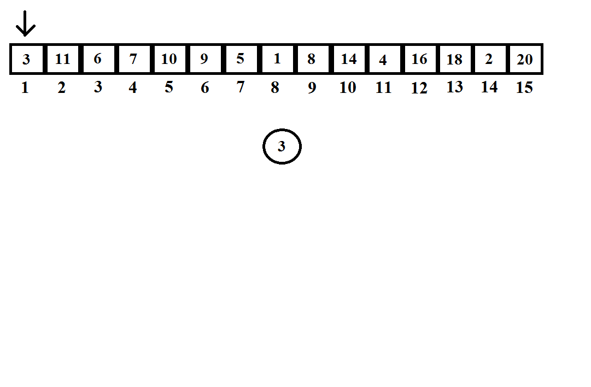
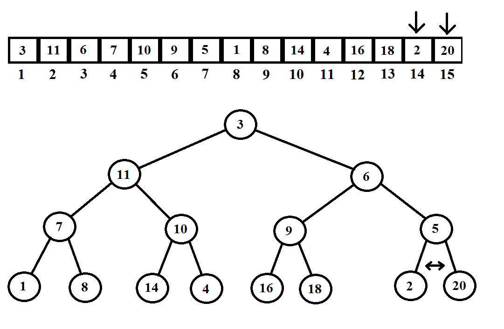
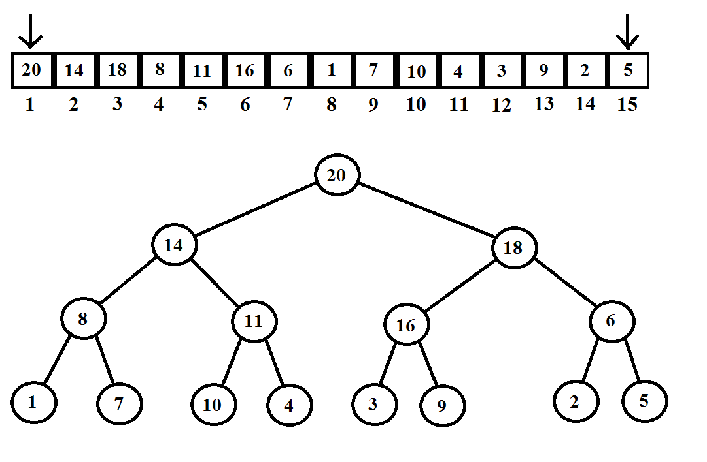
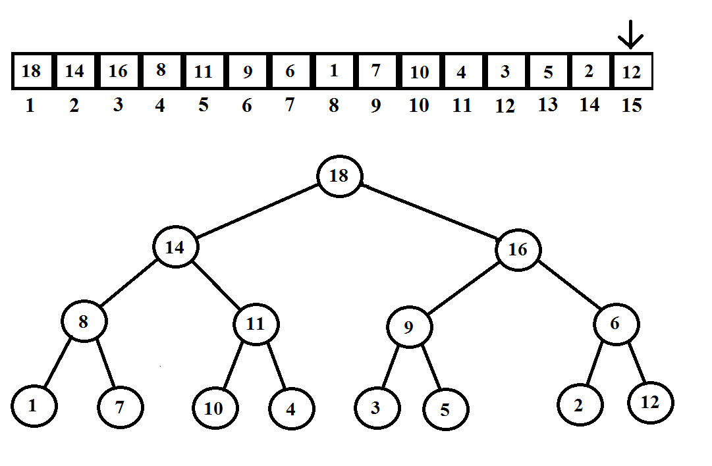
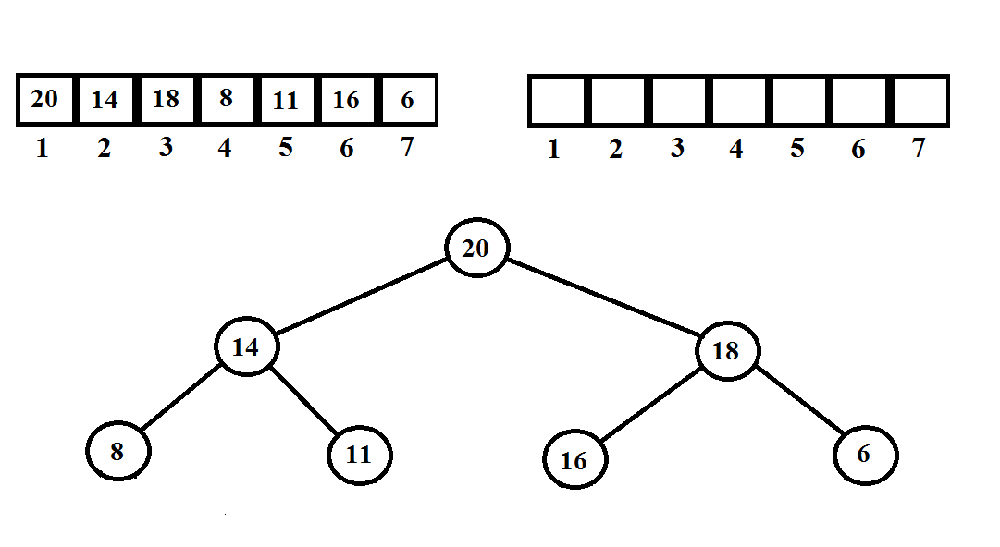

Sterta
Sterta wyróżnia dwa rodzaje:
-sterta minimalna gdzie wartości są układane od najmniejszej do największej
-sterta maksymalna gdzie wartości sa układane od największej do najmniejszej
1.Do wykonania stery potrzebujemy tablicy lub listy z wartościami.
2.Z posiadanych wartości tworzymy drzewo binarne dodając wartości kolejno od lewej strony.
3.Po utworzeniu drzewa sprawdzamy dwie sąsiadujące wartości i porównujemy która jest mniejsza w przypadku drzewa minimalnego lub większa w przypadku maksymalnego.
4.Po ustaleniu mniejszą lub większą wartość porównujemy z rodzicem. Załóżmy że tworzymy drzewo minimalne i chcemy sprawdzić czy rodzic jest mniejszy.
Aby to zrobić bierzemy indeks i danej wartości i dzielimy przez 2 zaokrąglając w dół.
5.Jeśli nadal nasza wartość jest mniejsza wykonujemy operacje ponownie, jeśli nie zamieniamy wartości miejscami.
6.Wykonujemy analogiczną operację dla wszystkich liści.
Przykład

Sterta maksymalna

Usuwanie maksymalnej wartości

Dodawanie wartości
Dodajmy np liczbę 12.
Zgodnie z poprzednimi punktami dodajemy ją na najbliższe wolne miejsce i sprawdzamy czy tam pasuje.

Sortowanie przez kopcowanie
Jeśli usuniemy teraz wszystkie wartości, a otrzymane wartości dodamy do tablicy,
zostanie ona posortowana od największej do najmniejszej wartości. Jeśli to samo zrobimy
z kopcem minimalnym tablica będzie posortowana od najmniejszej do największej wartości.
